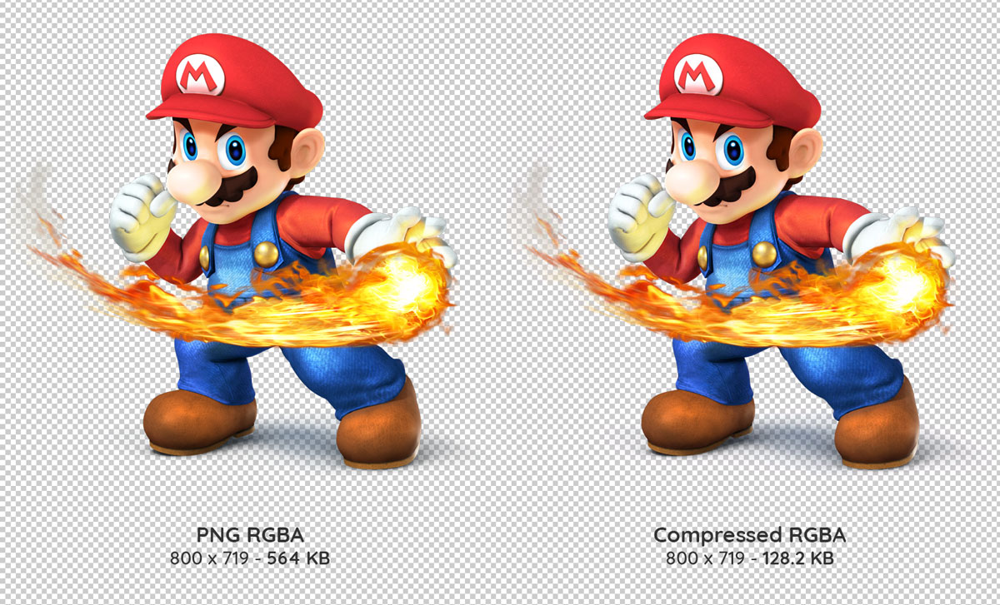
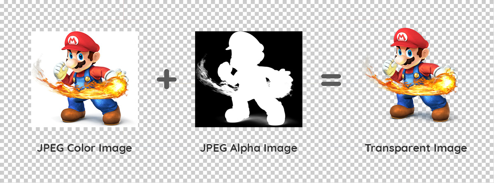

vue-image-alpha
vue-image-alpha is a Vue component allowing to use light-weight transparent images on a
website.
It is a remastered version of imgAlpha.js I ceated a few years ago. This Vue version has a more efficient
code and a faster image processing running in the background using Web Workers and buffer images.

How it Works
vue-image-alpha uses 2 compressed images such as jpeg format to build a light-weight transparent image. No more ugly GIF and no more heavy PNG!!
Simply save your image in 2 regular jpeg files:
- The color image (on a plain color background)
- The alpha image (black is transparent and white is opaque)

Installation
vue-image-alpha is a Vue component that can be installed as dependency in you Vue CLI project.
The easiest way to install it is using NPM:
npm install --save vue-image-alpha
Usage
Component Initialization
All you need to do is to import vue-alpha-image in your Vue code
import ImgAlpha from 'vue-image-alpha'
...
export default {
name: 'MyApp',
components: {
ImgAlpha,
...
},
...
},
Component Use
Use the component in your html or template code
<img-alpha src="/path/to/myImage.jpg" src-alpha="/path/to/myImage-alpha.jpg" bg-color="#FFFFFF"></img-alpha>
or with data binding
<img-alpha :src="require('/path/to/myImage.jpg')" :src-alpha="require('/path/to/myImage-alpha.jpg')" bg-color="#FFFFFF"></img-alpha>
Props
| Attribute |
Type |
Default |
Description |
| src |
string |
null |
Color image URL |
| src-alpha |
string |
null |
Alpha image URL |
| bg-color |
string |
#FFFFFF |
background color of the src image (optional) |
src
The src defines the color image source.
src-alpha
The src-alpha defines the alpha image used to make the color image transparent.
If the alpha image is not provided, the image transparency processing will be skipped and the image will be displayed as a regular image.
bg-color (optional)
The bg-color defines the background color of the color image.
By default, the bg-color is white (#FFFFFF)
This prop is used to provide a better alpha blending accuracy if you use a background color in the color image different than white.
License
MIT License
Copyright (c) 2019 Yann Masoch
Permission is hereby granted, free of charge, to any person obtaining a copy of this software and associated documentation files (the "Software"), to deal in the Software without restriction, including without limitation the rights to use, copy, modify, merge, publish, distribute, sublicense, and/or sell copies of the Software, and to permit persons to whom the Software is furnished to do so, subject to the following conditions:
The above copyright notice and this permission notice shall be included in all copies or substantial portions of the Software.
THE SOFTWARE IS PROVIDED "AS IS", WITHOUT WARRANTY OF ANY KIND, EXPRESS OR IMPLIED, INCLUDING BUT NOT LIMITED TO THE WARRANTIES OF MERCHANTABILITY, FITNESS FOR A PARTICULAR PURPOSE AND NONINFRINGEMENT. IN NO EVENT SHALL THE AUTHORS OR COPYRIGHT HOLDERS BE LIABLE FOR ANY CLAIM, DAMAGES OR OTHER LIABILITY, WHETHER IN AN ACTION OF CONTRACT, TORT OR OTHERWISE, ARISING FROM, OUT OF OR IN CONNECTION WITH THE SOFTWARE OR THE USE OR OTHER DEALINGS IN THE SOFTWARE.